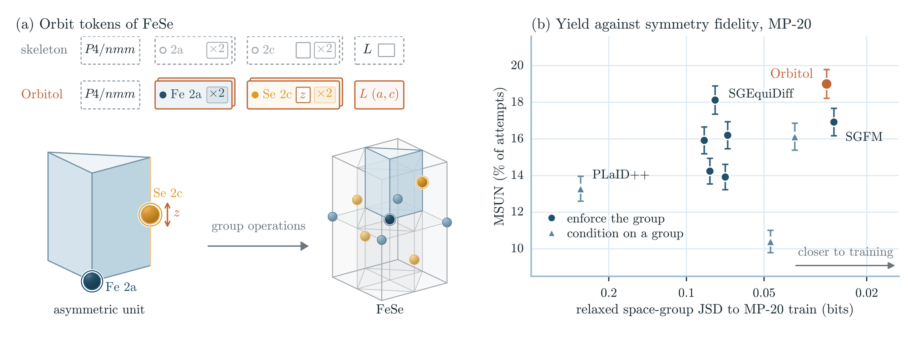
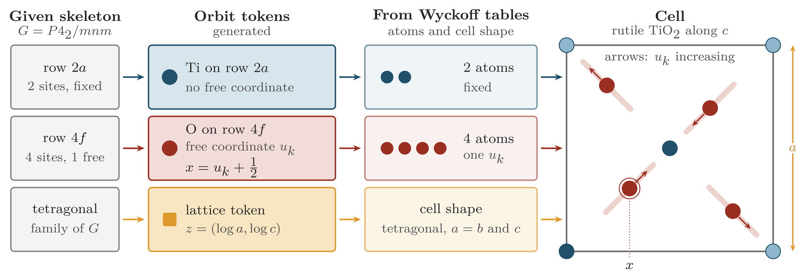
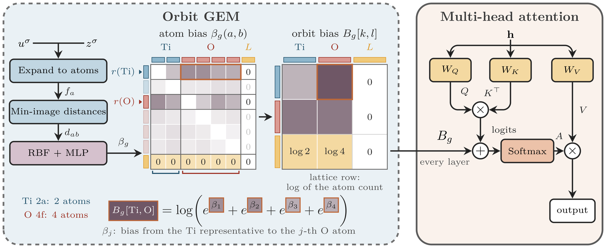
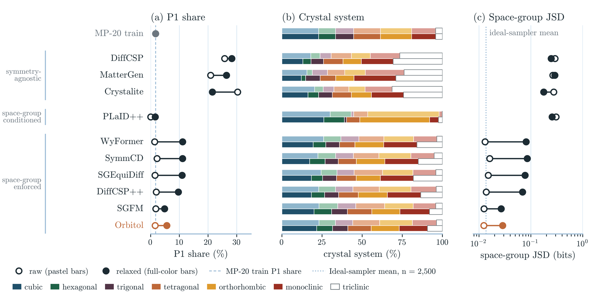
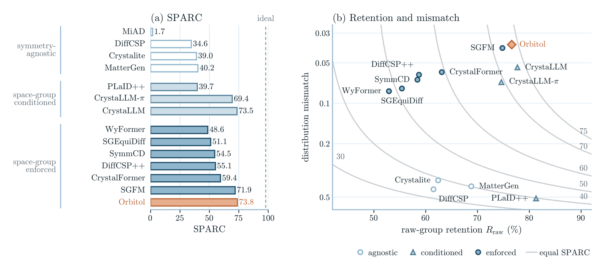
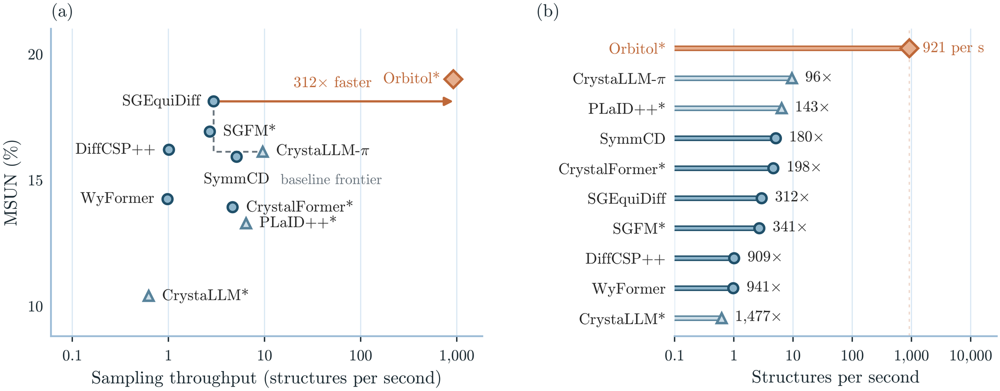
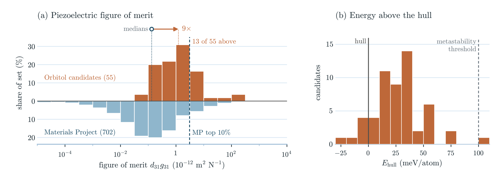

Generating crystals in a chosen space group
Many of the properties that a materials search looks for are allowed only in some crystal classes. Bulk piezoelectricity needs a noncentrosymmetric class other than 432, and pyroelectricity and conventional ferroelectricity need a polar class [1]. A generator that accepts a space group can search these classes directly.
Many crystal generators, including the base MatterGen model and Crystalite, treat a crystal as a set of atoms and attach no space group to a sample [2, 3]. Their samples also contain far more P1 structures than the training set. P1, the group that contains only lattice translations, accounts for 1.7% of the MP-20 training set. After relaxation with a machine-learned potential and no symmetry constraint, with symmetry detected by spglib at 0.1 Å, 28.3% of DiffCSP samples, 26.4% of MatterGen samples and 21.5% of samples from our Crystalite reproduction are in P1 [4, 2, 5]. A space-group label can condition a model, but the label alone does not make the coordinates and lattice obey the group operations [2]. Other generators therefore build the operations into the representation: CrystalFormer generates Wyckoff assignments, DiffCSP++ constrains generation with supplied ones, and SymADiT and UFO-MGen use orbit representations [6, 7, 8, 9].
Orbitol is a crystal generator built on Crystalite [3] that uses one token per Wyckoff orbit instead of one token per atom. A space group and its occupied Wyckoff positions, the rows of the group's Wyckoff table, form a skeleton. Given a skeleton, Orbitol generates an element and the free coordinates of each orbit, together with a lattice of the right shape. The group operations then place every atom, so every valid decoded structure has the requested operations; its detected group can still be a supergroup of the requested one. Crystalite's code is public on GitHub, and our earlier post describes the model.

Space groups, orbits and Wyckoff rows
As in Crystalite, a crystal with \(N\) atoms per cell is a lattice, fractional coordinates and atom types [4, 3]:
The rows of \(L\) are the lattice vectors and row \(i\) of \(f\) holds the fractional coordinates of atom \(i\). The space group \(G\) is the set of operations \(f \mapsto Rf + t\) that map the periodic crystal, atom types included, onto itself.
Applying every operation of \(G\) to one atom gives its orbit, and the atoms of an orbit are its members. In a CIF file that lists the space group's operations, each atom-site line is one orbit. A point on a mirror plane or a rotation axis is left in place by some operations, which form its site symmetry, so it has fewer distinct images than a point in general position. The International Tables list, for each group, the possible kinds of orbit as the rows of a table, the Wyckoff positions [1]; we call them Wyckoff rows \(w\). Each row gives a letter, a site symmetry, a multiplicity \(m_w\) and the coordinates of the members as functions of \(d_w\) free coordinates: three for the general row, fewer for special rows, none for fixed rows. The multiplicity counts members in the conventional cell, the standard cell chosen to show the symmetry, which can be larger than the smallest repeating cell, the primitive cell. The occupied rows, a row repeated if it holds several orbits, are the structure's Wyckoff sequence in the sense used to classify structure types [10]; together with the space group they form what we call the skeleton.
For an orbit \(k\) on row \(w_k\) with free coordinates \(x_k \in [0,1)^{d_{w_k}}\), the members are
where the matrices \(W_{w,j}\) and offsets \(v_{w,j}\) come from the Wyckoff tables. Changing \(x_k\) moves all members together, and the operations of \(G\) are preserved for every value. The lattice obeys the same operations, so its shape is fixed by the crystal family: a cubic cell has equal lengths and right angles, a triclinic cell has no such ties [1].
Rutile, TiO2 in \(P4_2/mnm\), is our running example. Ti sits on row 2a, which has two members and no free coordinate. O sits on row 4f, which has four members and one free coordinate \(x\):
The tetragonal cell has \(a = b\) and right angles, which leaves \(a\) and \(c\). Two elements and three numbers, \(x\), \(a\) and \(c\), describe all six atoms of the cell.
Orbits as tokens
Orbitol splits a crystal into the skeleton and a fill. The fill is everything that remains to be generated: an element and \(d_{w_k}\) free coordinates for each orbit, and the lattice entries that the family leaves free. The model sees one token per orbit and one lattice token. The lattice token holds \(a\) for cubic cells, \(a\) and \(c\) for tetragonal and hexagonal cells (trigonal groups use hexagonal axes), \(a\), \(b\) and \(c\) for orthorhombic cells, \(a\), \(b\), \(c\) and \(\beta\) for monoclinic cells, and all six parameters for triclinic cells.
MP-20 structures have about 4.7 orbits on average, against 10.4 atoms in the MP-20 cell, which is almost always primitive, and 18.9 in the conventional cell, so Orbitol uses about half as many tokens as Crystalite. The continuous numbers shrink more. Counting three coordinates per atom and six lattice entries for Crystalite, and the free coordinates and free lattice entries for Orbitol, we find 8.4 numbers per training structure on average, against about 37. In 64% of cubic MP-20 structures no orbit has a free coordinate: the skeleton fixes every position, and only the elements and the length \(a\) are left. At the other end, P1 has only the identity, every orbit is one atom with three free coordinates, and Orbitol's tokens are Crystalite's.
Rutile is selected first. Its O orbit on 4f has \(x = 0.3046\) in the MP-20 entry; dragging \(x\) moves all four O atoms along their lines, while the two Ti atoms on 2a stay where they are, and the lattice controls offer only \(a\) and \(c\). LaScO3 has four orbits: Sc on the fixed row 4b, La and one O on row 4c with two free coordinates each, which move their members within mirror planes, and the other O on the general row 8d with three. In spinel, MgAl2O4, the 14-atom MP-20 cell takes 15 Crystalite tokens and 4 Orbitol tokens, and the only free coordinate is the \(x\) of O on 32e. CsSnF3 is in P1, and its two strips are the same.
Diffusion on orbit tokens
Orbitol keeps Crystalite's diffusion Transformer [3] and changes what a token stands for. The figure below shows the construction for rutile.

Noise and target
For a given skeleton, the diffusion state holds Crystalite's 16-dimensional encoding of each orbit's element, the free coordinates of each orbit and the free lattice entries; the skeleton itself is not diffused. As in Crystalite, one EDM noise level \(\sigma\) per structure perturbs all three channels [11, 3]. Free coordinates are not in equal units. On rutile's 4f row the atom sits at \((x, x, 0)\), so a step \(\delta\) in \(x\) moves it by \(\sqrt{2}\,\delta\) in fractional units. We therefore give \(x\) a noise standard deviation of \(\sigma/\sqrt{2}\), so that the displacement of the atom along its line has standard deviation \(\sigma\). For rows with several free coordinates, the same scaling uses a fixed metric that is invariant under the point-group operations of \(G\).
Because \(x\) and \(x + 1\) are the same position, a noisy coordinate could have come from any integer copy of the clean one. For a clean \(x\), the training target is the average of its copies \(x + n\), weighted by their Gaussian likelihood given the noisy coordinate. Crystalite's loss compares with the nearest copy only, and its optimum need not be the posterior mean that the diffusion drift requires. DiffCSP's wrapped-normal diffusion and GEODE also use periodic targets [4, 12]; Orbitol applies one to the free coordinates under the fixed metric.
Network
An orbit token adds an embedding of its Wyckoff row to the embeddings of its noisy element and coordinates, because what a free coordinate means depends on the row. The space group enters as a learned embedding added to the noise-level conditioning that Crystalite injects into every block through adaptive layer normalization [13]. These embeddings only inform the network; the member maps and lattice ties enforce the operations, and the coordinate head is projected onto the directions each row allows.
GEM for orbit tokens
Crystalite's Geometry Enhancement Module (GEM) adds a geometry-dependent bias to the attention scores between atom tokens [3]. An orbit token stands for several atoms, and the network should see the geometry of all of them. We expand each noisy orbit into its members, compute atom-pair biases \(\beta_g(a, b)\) for each attention head \(g\) from approximate minimum-image distances, and contract them to one bias per pair of orbit tokens.

With exact distances in a cell that respects the symmetry, every atom of a query orbit sees the same distances to a key orbit up to a permutation, so one representative \(r(k)\) per query orbit is enough; for noisy states this holds approximately. The atoms of a key orbit \(l\) share one key and one value, so the orbit should receive the total attention its atoms would receive:
The representative then gets the same attention output as in the expanded layer whose members share their orbit's key and value. Averaging the biases instead would give four atoms with equal biases the weight of one. In P1 the sum has one term, and the bias is an ordinary atom-pair bias, as in Crystalite, although ours uses distances only.
Sampling
Generation first draws a skeleton from the 3,290 distinct MP-20 training skeletons at their empirical frequencies; 5.2% of validation and 4.9% of test structures have a skeleton that does not occur in training. Crystalite's EDM sampler then integrates the fill from noise in 25 Heun steps, or 49 network evaluations per structure. In P1 the member maps, metric and projection are identities, and the code reproduces Crystalite exactly with Crystalite's objective and settings, GEM off and zero row and group embeddings. The reported models differ from that setting: they use the periodic target, a distance-only GEM and learned embeddings.
Discovery yield, symmetry and sampling cost
We evaluate de novo generation on MP-20 and Alex-MP-20, which contain cells of at most 20 atoms [14, 2]. The baselines either condition on a space group (CrystaLLM, CrystaLLM-π and PLaID++) or enforce it (CrystalFormer, SGEquiDiff, WyFormer, SymmCD, DiffCSP++ and SGFM) [15, 16, 17, 6, 18, 19, 20, 7, 21]. For symmetry alone, we add the agnostic DiffCSP, MatterGen, MiAD [22] and our Crystalite reproduction. Every model in the table goes through the same pipeline: the first 2,500 attempts, with failed attempts kept in the denominator, 500 FIRE steps with NequIP-OAM-L and no symmetry constraint [23], LeMat-GenBench for energies and novelty [24], and spglib at 0.1 Å for symmetry [5]. The agnostic models are relaxed and checked for symmetry only.
SUN counts attempts that are stable (predicted energy on or below the convex hull of known phases), unique within the cohort and novel against LeMat-Bulk; MSUN also counts metastable ones, up to 0.1 eV/atom above the hull. Retention is the share of attempts whose relaxed structure is still detected in the requested group (or the declared group, for conditioned models), and relaxing into a supergroup counts as a loss. Joint yield counts attempts that are MSUN and retained. Retention alone rewards a model that produces a few groups that survive relaxation, such as \(Fm\bar{3}m\), so we also report SPARC (symmetry preservation and reference coverage):
where \(R_{\mathrm{raw}}\) is the share of attempts whose relaxed structure keeps the group detected in its raw structure (76.6% for Orbitol, whose retention of the requested group is 74.7%), and \(\mathrm{BC}\) is the Bhattacharyya coefficient between the training frequencies \(p_g\) of the groups and the shares \(q_g\) of retained attempts in them. An ideal sampler of MP-20 train scores 97.9.
| Model | Discovery (%) | After relaxation | |||||
|---|---|---|---|---|---|---|---|
| SUN ↑ | MSUN ↑ | Joint yield ↑ | Retained (%) ↑ | SPARC ↑ | P1 (%) | JSD (bits) ↓ | |
| Space group conditioned | |||||||
| CrystaLLM | 1.00 | 10.4 | 4.6 | 77.8c | 73.5 | 4.7 | 0.047 |
| CrystaLLM-π | 1.40 | 16.1 | 8.8 | 74.3c | 69.4 | 4.6 | 0.038 |
| PLaID++a | 1.16 | 13.3 | 7.0 | 81.2c | 39.7 | 1.6 | 0.257 |
| Space group enforced | |||||||
| CrystalFormer | 0.80 | 13.9 | 7.8 | 62.3 | 59.4 | 11.1 | 0.071 |
| SGEquiDiff | 0.68 | 18.1 | 8.1 | 54.7 | 51.1 | 11.0 | 0.077 |
| WyFormerb | 0.40 | 14.2 | 6.2 | 51.8 | 48.6 | 11.2 | 0.081 |
| SymmCDb | 0.84 | 15.9 | 9.0 | 57.4 | 54.5 | 11.1 | 0.085 |
| DiffCSP++ | 0.60 | 16.2 | 7.6 | 57.3 | 55.1 | 9.7 | 0.069 |
| SGFM | 1.00 | 16.9 | 10.8 | 73.4 | 71.9 | 4.9 | 0.027 |
| Ours (space group enforced) | |||||||
| Orbitol | 1.11 | 19.0 | 13.8 | 74.7 | 73.8 | 5.6 | 0.029 |
De novo generation on MP-20, 2,500 attempts per model; the Orbitol row is the mean of three sampled cohorts. MP-20 train has 1.7% P1, and an ideal sampler with 2,500 draws has a JSD of 0.0137 bits. SGFM, like Orbitol, draws its Wyckoff templates from the training set. aFirst 2,500 rows of the released pool; draw count not verified. bRetrained on the training split; WyFormer geometry from DiffCSP++. cGroup declared by the model.
Orbitol reached 19.0% MSUN, the highest among the symmetry-aware models we evaluated, against 18.1% for SGEquiDiff and 16.9% for SGFM. Its SUN, 1.11%, is below that of CrystaLLM-π and PLaID++, so most of its discoveries lie in the metastable window. The MSUN margin over SGEquiDiff is small. The margin in joint yield, which also asks the relaxed structure to keep its group, is larger: 13.8% against 10.8% for SGFM and 8.1% for SGEquiDiff, which keeps its group in 54.7% of attempts. Each comparison uses one training run per model, the Orbitol checkpoint was chosen by MSUN under our in-house evaluator during training, and stability is judged from machine-learned energies.
The agnostic models were not scored for yield here, and we do not claim that orbit tokens raise yield over Crystalite. On the LeMat-GenBench leaderboard, which scores the structures that authors submit, agnostic models reach up to 24.1% MSUN (Crystalite). For the six symmetry-aware models in both sources, our measured MSUN is 4.7 to 13.4 points higher than the leaderboard's, so the two should not be compared directly.
Symmetry after relaxation
After relaxation, Orbitol has 5.6% P1 structures, against 1.7% in training. Its JSD to the training groups is 0.029 bits, and SGFM's is 0.027 bits. Both are about twice the ideal-sampler value, and the difference between them is within the finite-sample spread.

Orbitol kept its requested group in 74.7% of attempts, SGFM in 73.4% and the other enforced models in 51.8 to 62.3%. PLaID++ kept 81.2% of its declared groups, but its JSD is 0.257 bits: its samples concentrate on a few groups, such as \(Pnma\) and \(Fm\bar{3}m\), that survive relaxation. SPARC accounts for both effects; Orbitol scores 73.8, CrystaLLM 73.5 and SGFM 71.9. Repeating the same relaxation on the same 500 structures changed the detected group of up to 17 of them, so differences of a few points in retention or SPARC can fall within run-to-run variation.

On Alex-MP-20, Orbitol reached 34.2% MSUN and kept its group in 71.6% of attempts. LeMat-Bulk contains Alexandria, so novelty on this dataset is measured against a reference that overlaps the training data.
Sampling cost
We timed every model in the table on one RTX 6000 Ada, from the prior draw to decoded structures, with each released sampler at the settings of the quality cohorts and a tuned batch size (PLaID++ with the authors' 4-bit recipe); we did not compile the baselines or reduce their step counts. In large batches, Orbitol samples about 920 structures per second, 1.09 s per 1,000: about 310 times faster than SGEquiDiff and 96 to 1,477 times faster than the other symmetry-aware baselines. It uses 49 network evaluations per structure, against about 2,000 for the diffusion baselines and 500 for SGFM, and runs packed and compiled. These timings exclude relaxation, which takes minutes per 1,000 structures and dominates the end-to-end time.

Piezoelectric candidates
Piezoelectricity is allowed only in the 20 noncentrosymmetric crystal classes other than 432 [1]. We sampled skeletons from these classes with Orbitol models trained on Alex-MP-20 and MP-20, and kept samples that retained their group after NequIP relaxation and lay within 0.1 eV/atom of the Alex-MP-20 DFT hull by NequIP energy. A machine-learned screen, to be reported separately, ranked them by predicted figure of merit, and 62 went to density functional theory (DFT). After removing four with PBE band gaps of at most 0.03 eV, 58 candidates in 26 space groups remained: 26 nitrides and oxynitrides, 23 oxides, 8 halides and one sulfide.
We relaxed each candidate with PBE and computed its elastic tensor and, with density functional perturbation theory (DFPT) [25], its dielectric and piezoelectric tensors. The figure of merit is the transverse energy-harvesting product
maximized over orientations [26], which we also computed for the 702 materials with a non-zero piezoelectric tensor in the Materials Project's DFPT set [27, 28, 29]. The DFT relaxations imposed the crystal symmetry, so they could not lower it; we therefore checked stability with \(\Gamma\)-point phonons, which include symmetry-lowering distortions. Following an unstable mode moved one candidate to a lower-symmetry subgroup. Of the 58 final structures, 55 have no unstable lattice vibration at the zone center (\(\Gamma\)) and are mechanically stable.
Relative to a hull of Materials Project and Alexandria phases recomputed with our settings [30, 31], 54 of the 55 lie within 0.1 eV/atom, with a median of 27 meV/atom; the same cut was applied with NequIP before DFT, so this mostly confirms the filter. Of the 55, 49 match no Materials Project or Alexandria entry in the same space group. Their median figure of merit is 1.23×10-12 m2 N-1, about nine times the Materials Project median of 0.133, and 13 of the 55 (12 of the 49 new ones) lie above the Materials Project's 90th percentile, 3.09.

The shift reflects how the candidates were chosen: they were preselected for a high predicted figure of merit, and the Materials Project set was not. Against Materials Project materials of the same point group, their median percentile is 72. DFPT gives intrinsic single-crystal responses at 0 K, a \(\Gamma\)-point test does not establish dynamical stability over the Brillouin zone, and the two largest values, 308 and 109, belong to structures close to an elastic instability.
Summary and limitations
With one token per orbit, the skeleton supplies the operations of the group and the network generates only the free numbers: the elements, the free coordinates and the free lattice entries. On MP-20 this came with the highest MSUN and joint yield among the symmetry-aware models we evaluated, at a fraction of their sampling cost.
The approach has limits. Skeletons are drawn from those seen in training, so a skeleton absent from the data cannot be sampled, and unconstrained relaxation can still change the detected group. The comparisons describe single checkpoints and cohorts scored with machine-learned energies. A learned skeleton prior could reach skeletons outside the training set.
Selected references
- Aroyo (ed.) (2016). International Tables for Crystallography, Volume A: Space-group symmetry. International Union of Crystallography.
- Zeni et al. (2025). A Generative Model for Inorganic Materials Design. Nature.
- Hadzi Veljkovic et al. (2026). Crystalite: A Lightweight Transformer for Efficient Crystal Modeling. arXiv preprint.
- Jiao et al. (2023). Crystal Structure Prediction by Joint Equivariant Diffusion. NeurIPS.
- Togo et al. (2024). Spglib: a software library for crystal symmetry search. Science and Technology of Advanced Materials: Methods.
- Cao et al. (2025). Space Group Informed Transformer for Crystalline Materials Generation. Science Bulletin.
- Jiao et al. (2024). Space Group Constrained Crystal Generation. ICLR.
- Karmush et al. (2026). Generating Symmetric Materials using Latent Flow Matching. arXiv preprint.
- Zhou et al. (2026). Topology-Stratified Materials Discovery with A Flow-Based Generative Model. arXiv preprint.
- Allmann and Hinek (2007). The introduction of structure types into the Inorganic Crystal Structure Database ICSD. Acta Crystallographica Section A.
- Karras et al. (2022). Elucidating the Design Space of Diffusion-Based Generative Models. NeurIPS.
- Lou and Ganose (2026). GEODE: Symmetry-Preserving Cartesian Diffusion for Crystal Generation. arXiv preprint.
- Peebles and Xie (2023). Scalable Diffusion Models with Transformers. ICCV.
- Xie et al. (2022). Crystal Diffusion Variational Autoencoder for Periodic Material Generation. ICLR.
- Antunes et al. (2024). Crystal structure generation with autoregressive large language modeling. Nature Communications.
- Bone et al. (2025). Discovery and recovery of crystalline materials with property-conditioned transformers. arXiv preprint.
- Xu et al. (2026). PLaID++: A Preference Aligned Language Model for Targeted Inorganic Materials Design. ICML.
- Chang et al. (2025). Space Group Equivariant Crystal Diffusion. NeurIPS.
- Kazeev et al. (2025). Wyckoff Transformer: Generation of Symmetric Crystals. ICML.
- Levy et al. (2025). SymmCD: Symmetry-Preserving Crystal Generation with Diffusion Models. ICLR.
- Puny et al. (2025). Space Group Conditional Flow Matching. arXiv preprint.
- Okhotin et al. (2025). MiAD: Mirage Atom Diffusion for De Novo Crystal Generation. arXiv preprint.
- Kavanagh and MIR Group @ Harvard (2026). NequIP & Allegro Foundation Potentials. Zenodo.
- Betala et al. (2026). LeMat-GenBench: A Unified Evaluation Framework for Crystal Generative Models. arXiv preprint.
- Wu et al. (2005). Systematic treatment of displacements, strains, and electric fields in density-functional perturbation theory. Physical Review B.
- Bowen et al. (2014). Piezoelectric and ferroelectric materials and structures for energy harvesting applications. Energy & Environmental Science.
- de Jong et al. (2015). A database to enable discovery and design of piezoelectric materials. Scientific Data.
- Petousis et al. (2017). High-throughput screening of inorganic compounds for the discovery of novel dielectric and optical materials. Scientific Data.
- de Jong et al. (2015). Charting the complete elastic properties of inorganic crystalline compounds. Scientific Data.
- Jain et al. (2013). Commentary: The Materials Project: A materials genome approach to accelerating materials innovation. APL Materials.
- Schmidt et al. (2023). Machine-Learning-Assisted Determination of the Global Zero-Temperature Phase Diagram of Materials. Advanced Materials.